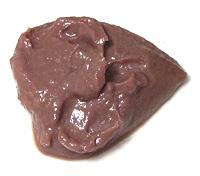
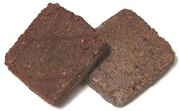
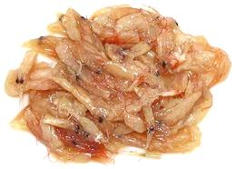
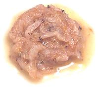
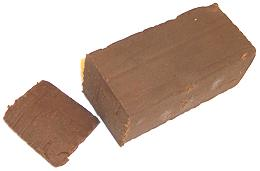
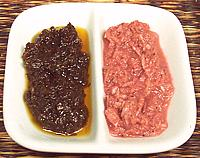
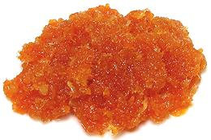
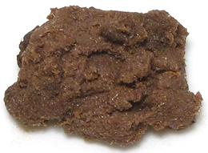
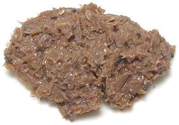
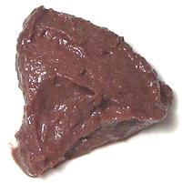

SAFARI
Users
Burma
Pazun Ngapi
, Burmese shrimp paste, is said by some sources to be much like the Thai, but a little softer. Other sources say it's more like the Malaysian. Well, Burma is northwest of Thailand and shares a long border, so I'd say Thai- Northern shrimp paste is a good bet, lacking othere evidence.China

Hom ha / Hay koh
is used in southern coastal China for stir fries, with vegetables (particularly Ong Choy) and pork, but not a lot elsewhere in China. It is ground smooth, darker, more pungent, less shrimpy and saltier than most shrimp sauces but not so dark and salty as the Malaysian. The photo sample is Koon Chun brand, made in Hong Kong and widely available in Southern California.Indonesia

Terasi
is made similar to Belacan (and may even be labeled "Belacan") but varies buy region of manufacture as to exact composition. Color ranges from reddish-purple to dark brown and it may be made of a mixture of shrimp, fish and vegetables. It is pressed into blocks, and as with Belacan it is roasted before use. It is also sometimes available as pre-roasted slices individually wrapped, as in the photo.The best way to roast is in a dry pan, crumbling it as it roasts. many
recipes say to wrap it in foil and hold over a burner flame until aromatic,
which smells up the kitchen less. Appartment dwellers sometimes resort to
roasting it in the oven, because ovens generally vent to the outdoors.
This product can be kept at room temperature for many months if tightly
wrapped and kept dry. You'll want it tightly wrapped in any case to confine
the distinctive odor. It's best kept in a tightly capped jar.
Korea

Saeujeot
is an important ingredient in Korean cuisine, these shrimp are whole and very salty but only mildly fermented so they have very much less flavor (and aroma) than the similar looking Malaysian Cincalok. Saeujeot is used as a general condiment and seasoning, sometimes in place of plain salt, and particularly in kimchi.Malaysia & Singapore
|
 Cincalok(say chin-cha-lo) is a pinkish paste of whole tiny shrimp, salt and rice flour popular in Malaysia as a dipping sauce mixed with lime juice and shallots (Sambal Cincalok). It is also used in marinades for pork, as an ingredient in omelets and in steamed vegetable recipes. A required ingredient for Nonya cooking in Singapore, it's sold in glass bottles. It has a notably pungent aroma and taste, considered an acquired taste even by some Malaysians.Petis Udangis a black shrimp paste with the consistency of molasses and made from fermented shrimp, salt, sugar and flour, similar to Chinese shrimp sauce. It is served as a condiment and added to soups. Blachanis the most common Malaysian shrimp paste. It is tiny shrimp mashed and fermented for a couple of months. It is then fried and pressed into cakes. It is always roasted before use in recipes. I have also found this product "pre-roasted", consisting of 1/4 inch thick slices from the block individually wrapped.The best way to roast is in a dry pan, crumbling it as it roasts. many
recipes say to wrap it in foil and hold over a burner flame until aromatic,
which smells up the kitchen less. Appartment dwellers sometimes resort to
roasting it in the oven, because ovens generally vent to the outdoors.
This product can be kept at room temperature for many months if tightly
wrapped and kept dry. You'll want it tightly wrapped in any case to confine
the distinctive odor. It's best kept in a tightly capped jar.
|
Philippines

Bagoong Alamang
(also spelled Bagoong Aramang) is tiny shrimp or krill salted, fermented dried and crushed into a paste. The pink version is as fermented, but the color may vary because it is colored with Red Dye #3, sometimes more than excessively. To be honest, the bright pink versions dye food such a horrid unappetizing color I recommend using the brown fried version, or a shrimp paste from some other culture. It is used as an ingredient and as a table condiment.Bagoong Guisado / Ginisang Bagoong
is the brown version. It is Bagoong Alamang that has been mixed with other ingredients, typically Oil, Vinegar, Sugar, Onion and/or Garlic, and then fried. Available in Regular, Sweet and Spicy versions, it is used as an ingredient and as a table condiment.Thailand
Thai - With Soy Oil- [Kapi, Gapi]
Kapiis still made in fishing villages and collected by agents for packing companies. Basically it's just whole tiny shrimp salted and dried (larger shrimp will be fermented before drying). Some sources say this is not made from shrimp, but a similar crustacean, but there is no true scientific definition of "shrimp" or "prawn", so call it what you will. In any case it is made from genus Acetes (most) or genus Mesopodopsis. The packing company may add other ingredients, typically: soybean oil, garlic, salt, pepper, paprika oleoresin. It is often roasted before use - wrapping in foil and holding over a burner flame until aromatic works well.Buying: Pantainorasingh and Tra Chang are quality brands widely
available in the US. Pantainorasingh is the brand I usually have on hand.
The small 3.2 ounce jar is adequate for most of us. While properly made
kapi may last for weeks at room temperature it's best to refrigerate it
once opened, where it will keep indefinitely.
Thai - Without Soy Oil- [Kapi, Gapi] This form of Kapiis made just as described above from genus Acetes (most) or genus Mesopodopsis - except, tor this type, the packing company does not add oil or other major ingredients. It is often roasted before use - wrapping in foil and holding over a burner flame until aromatic works well.Buying: This form is very uncommon compared to the form with
oil, and I found only two brands in one of the largest Asian markets
in Los Angeles, and none in others. The photo specimen is Nang Fah (Tue
Kung) brand, which contains only shrimp and salt. Pantainorasingh is
also available but has some other ingredients and is sweetened with
saccharin. Recommended storage is "in a cool dry place", but it's best
to refrigerate it once opened, where it will keep indefinitely.
Thai- Northern- [Kapi Kung] The Shrimp Paste of northern Thailand is not currently available in North America, even in Los Angeles. Andy Ricker, who is extremely fussy about true Thai taste, suggests faking it up from Korean salted shrimp and a little regular Thai Kapi (the kind without oil). Details and Cooking. |
Vegetarian
 Probably the best solution, often called Shan Gapi (Shan Srimp Paste), is
Shan Tua Nao - Soybean Paste,
Disks, (Burmese), which is easy to make. You can use Thai
Yellow Bean Sauce which is easily available and made of fermented
soybeans and salt. Chinese
Fermented Black Beans can be
crushed to a paste and used.
Probably the best solution, often called Shan Gapi (Shan Srimp Paste), is
Shan Tua Nao - Soybean Paste,
Disks, (Burmese), which is easy to make. You can use Thai
Yellow Bean Sauce which is easily available and made of fermented
soybeans and salt. Chinese
Fermented Black Beans can be
crushed to a paste and used.
Vietnam
